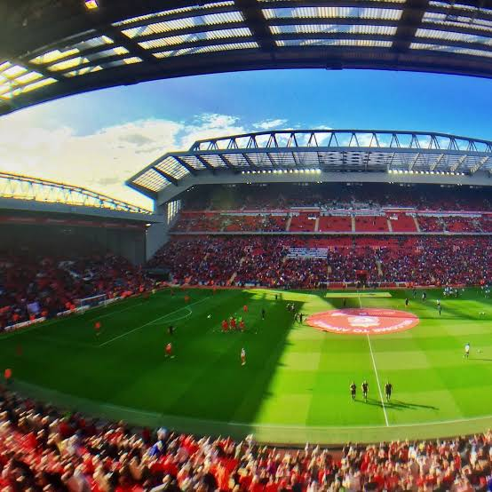
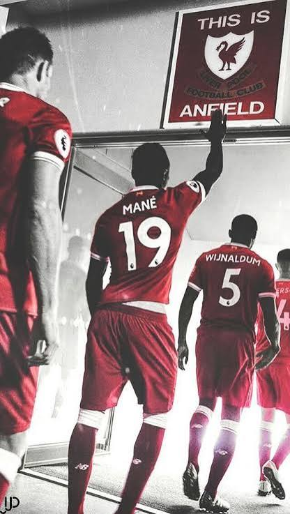

Anfield
Anfield es el estadio del Liverpool FC desde su fundación en 1892. Está ubicado en el barrio de Anfield, en la ciudad de Liverpool, Inglaterra, y tiene una capacidad de más de 61.000 espectadores.

Una de las zonas más conocidas del estadio es "The Kop", la tribuna donde se ubican los hinchas más fieles del club y donde se canta con más fuerza el himno "You'll Never Walk Alone".
Antes de cada partido, los jugadores tocan un cartel ubicado en el túnel de vestuarios que dice "This Is Anfield", como recordatorio de la presión que representa jugar en ese estadio para los equipos visitantes.

Anfield ha sido escenario de partidos históricos de la Champions League y sigue siendo uno de los estadios más respetados de Europa por el ambiente y su fiel hinchada.
Volver al inicio.